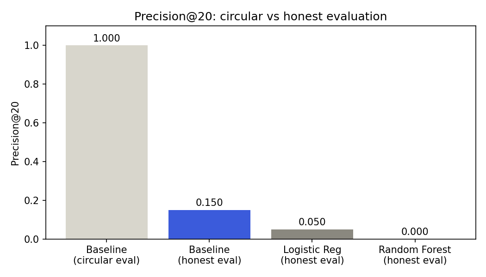
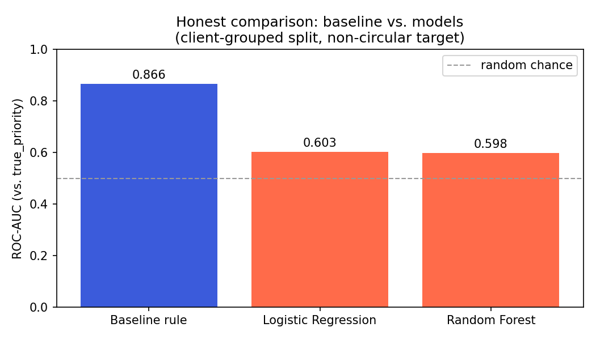
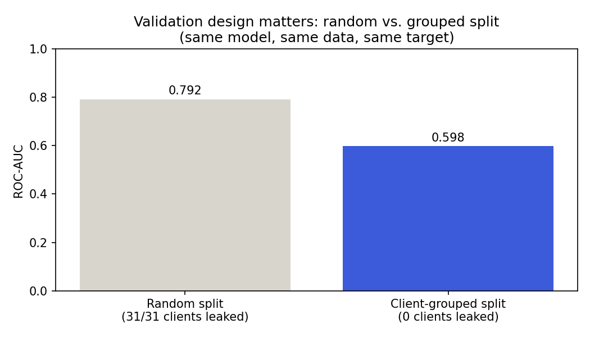
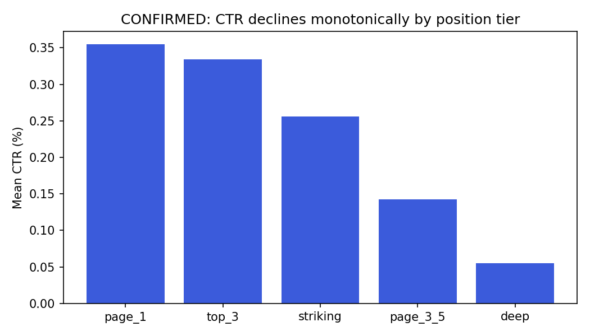
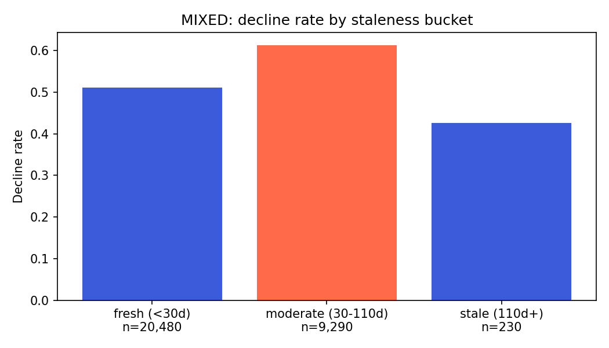

Which declining content pages should a reviewer with limited time check first — and can a learned model actually outperform a simple hand-written rule at that task? I built a transparent baseline rule and two learned models (Logistic Regression, Random Forest) on FlyRank's anonymized starter dataset (30,000 content items across 32 pseudonymized clients), validated under a client-grouped split to prevent memorization. The first evaluation looked perfect for the baseline — a circular artifact, not a real result, since the metric used was the exact label the baseline was gated on. Under a stricter, non-circular target (severe decline combined with real traffic at stake) and an honest split, the simple baseline (ROC-AUC 0.866) clearly outperformed both learned models (0.603 and 0.598). The actionable output is a ranked action playbook built on the baseline — because here, complexity did not earn its place.
Content teams with large page inventories can't manually review every page for a possible refresh — someone or something has to decide which pages to look at first, out of thousands. This project treats that as a decision-support ranking problem: given a page's recent search and engagement signals, produce a ranked review queue that helps a human reviewer spend limited time where it's most likely to matter.
The cost of getting this wrong runs in both directions. A false positive wastes a reviewer's time on a page that wasn't really a priority. A false negative is more expensive: a genuinely high-value declining page keeps losing visibility, unnoticed, until someone finds it by accident. Because of that asymmetry, this project treats missing a real priority as more costly than flagging one extra page worth a quick look.
This project uses the small anonymized starter dataset that ships with the FlyRank ML Internship starter repository: content_refresh_anonymized.csv — 30,000 rows,
one row per pseudonymized content item, spanning 32 pseudonymized clients, with trailing-90-day search and engagement metrics. No client names, domains, URLs, or raw queries are present
in this release or anywhere in this paper — only pseudonymized identifiers used for grouping and joining.
Eligibility filter: impressions_90d > 0 and content_age_days >= 90 — all 30,000 rows in the starter release met this filter.
Explicitly excluded from modeling: trend_direction and trend_pct — both are used only to construct labels and evaluation targets, never as
model features, since the label was computed from them. Using either as a feature would let a model learn to copy its own answer rather than find real signal (see Methodology).
This project follows the Refresh / Content Opportunity Scoring lane: score which pages are worth reviewing first for a possible refresh. The starter label,
is_declining_label (trend_direction == "down"), is a proxy from the current window, not a validated future-window outcome — a limitation carried
through this entire project and named explicitly in the Limitations section.
A second, stricter evaluation target, true_priority, was constructed partway through this project after discovering that the starter label made the baseline's own
evaluation circular (see Results). true_priority flags pages that are both severely declining (bottom third of decline magnitude among decliners) and carry real traffic
at stake (impressions at or above the median for declining pages) — still built only from label-construction fields, never used as a feature.
A transparent, hand-written rule, readable in one sentence: a page is worth reviewing if it's declining and visible (real impressions), ranked higher the more impressions it's wasting, with extra priority if it's also either moderately stale (30–110 days since last update) or badly underperforming CTR for its position.
impressions_90d, sessions_90d, avg_position, ctr, word_count, content_age_days,
days_since_last_update, search_volume, cpc, engagement_rate, scroll_rate.
Logistic Regression and Random Forest (200 trees, max depth 8, min leaf 20) — chosen per the "readable first, stronger second" rule: start simple, add complexity only once it's earned its place against a real comparison.
The starter data spans 32 clients. A plain random split lets rows from the same client appear in both train and test, letting a model partly memorize client identity instead of learning a transferable pattern. All headline results use a client-grouped split (30% test, zero client overlap verified). A random split is also reported once, specifically to show the size of that gap (see Results).
Following the project's leakage-hunting checklist: a timeline was drawn confirming every feature is observed strictly before the label window; no product-decision flags exist in this
dataset to misuse; and, as a direct test of the evaluation harness itself, trend_pct was deliberately added back in as a feature. ROC-AUC jumped from 0.830 to a perfect
1.000, with trend_pct alone taking 56% of feature importance — confirming the harness correctly detects a planted leak. trend_direction and
trend_pct stay excluded from every real feature set in this project.
The baseline rule's score is gated by a multiplicative declining_flag — meaning any row it scores above zero is, by construction, guaranteed to have
is_declining_label == 1. Evaluating the baseline against that same label is a tautology, not a finding: precision@20 comes out to a perfect 1.000, which looks
impressive and means nothing.

Re-evaluated against true_priority, with the same client-grouped split for every method:
| Method | Precision@20 | Precision@50 | ROC-AUC |
|---|---|---|---|
| Baseline rule | 0.150 | 0.100 | 0.866 |
| Logistic Regression | 0.050 | 0.020 | 0.603 |
| Random Forest | 0.000 | 0.020 | 0.598 |
Base rate for true_priority in the test set: 0.040.

Both models were trained to predict is_declining_label — a simple yes/no — not the stricter true_priority target they were evaluated against.
That target mismatch, not model capacity, looks like the main driver of the gap: a follow-up model trained directly on true_priority (Section: Reproducibility) reached
ROC-AUC 0.830 under the same grouped split — far closer to the baseline — suggesting the fix is aiming the model at the right target, not making it more complex.

A plain random split reported ROC-AUC 0.792 — a number that would have been easy to headline. Under the client-grouped split, the honest number was 0.598. The 0.194 gap is not noise; it's a direct measurement of how much of the random split's apparent skill was the model partially recognizing which client a row belonged to.
Two signals behind the baseline's rules were checked against real bucket tables before being trusted:


The Random Forest's highest-confidence miss (score 0.865) was a page with real trend_pct of +43.3% — a page that was actually improving, not
declining. That's a genuine directional error, not just a near-miss on priority ranking. Separately, the model's three lowest-ranked true priorities all had severe declines
(−86% to −98%) but only moderate impressions relative to the training distribution — consistent with the model over-relying on raw traffic volume as a stand-in
for importance, when volume and severity are not the same thing.
is_declining_label is a proxy computed from the current window, not a genuine future-window outcome — a stronger version of this project would define
prior window → future window labels with a full leakage audit on the larger warehouse release.Because the baseline outperformed both models under honest evaluation, the shipped action playbook is built on the baseline rule, not the more complex model — shipping the model here would have meant choosing complexity over results.
| Reason code | Recommended action | Why |
|---|---|---|
| low_ctr_visible_page | Rewrite title/meta | Ranks well enough to be seen but isn't converting visibility into clicks |
| moderately_stale_page | Content refresh review | 30–110 days since update — a mixed signal, so flagged for review, not automatic action |
| declining_with_demand | Monitor or review | Declining and visible, lowest-confidence category |
9,961 of 30,000 eligible pages were flagged for review under this rule.
Every notebook behind this paper is in the project repository, in order:
work/notebooks/w01_research_question.ipynb — lane framing and starter data first lookwork/notebooks/w02_ml_task_framing.ipynb — task type, target, and success metricwork/notebooks/w03_data_contract.ipynb — data contract and warehouse verification querieswork/notebooks/w04_baseline_score.ipynb — the baseline rule, signal checks, top-20 reviewwork/notebooks/w05_model.ipynb — Logistic Regression and Random Forest, first honest comparisonwork/notebooks/w06_validation_audit.ipynb — the random-vs-grouped split audit and deliberate leakage testwork/notebooks/w07_action_playbook.ipynb — the ranked action playbook and this paper's exportsRepository: github.com/m-husnain-dev/ml-internship